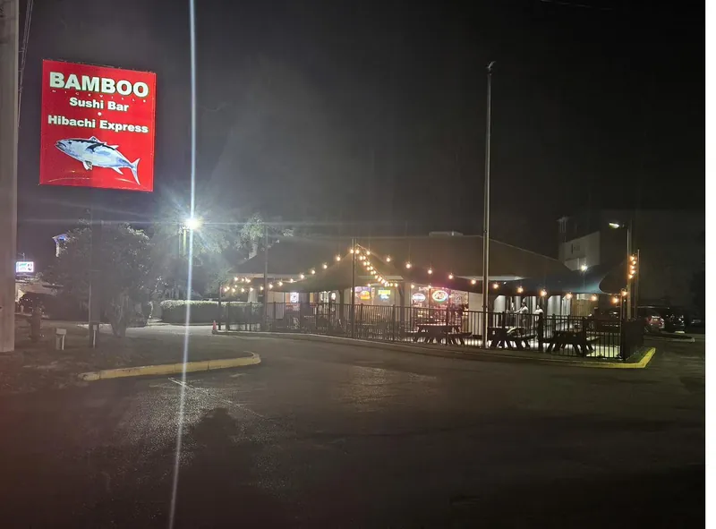

Bamboo in pictures
Gallery
The food and the places we serve it. We keep captions deliberately simple unless the subject of a photograph is verified.



The food and the places we serve it. We keep captions deliberately simple unless the subject of a photograph is verified.
